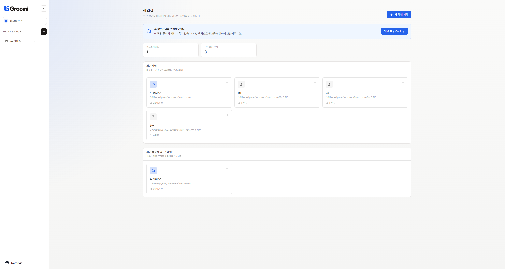
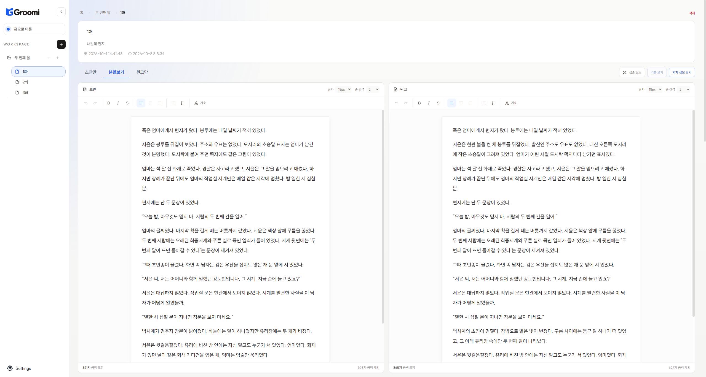
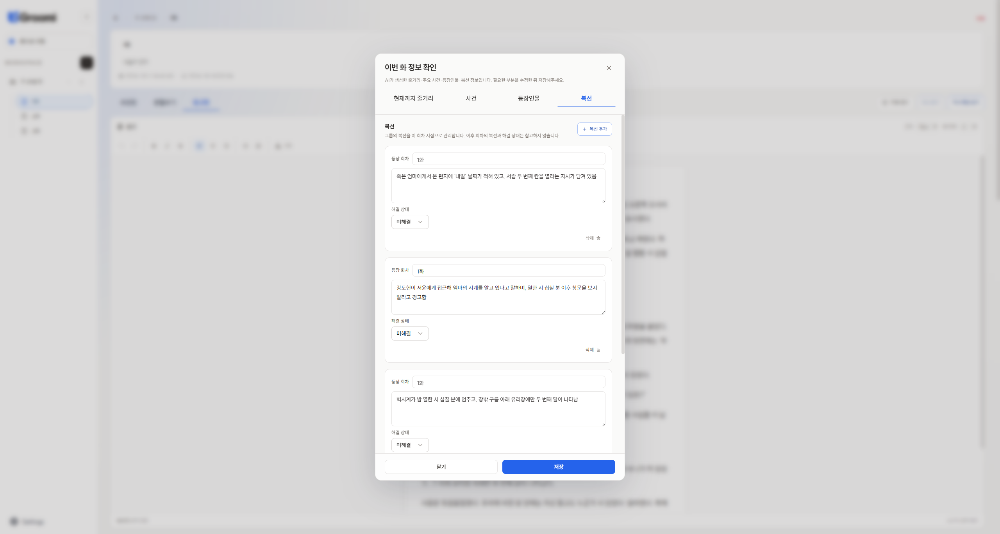
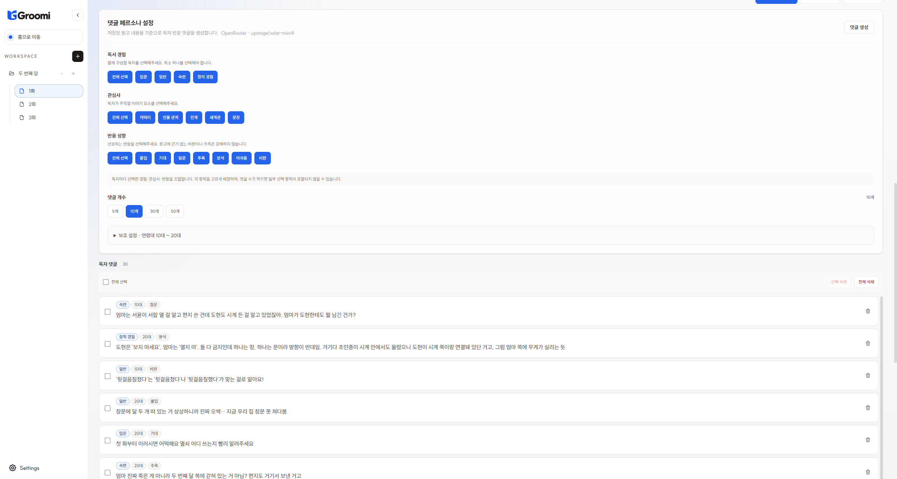

Write and compare
Keep drafts and manuscripts separate. Revise side by side, check autosave status, and track character counts.
Draft / ManuscriptSplit viewAutosave
Write your manuscript, keep track of your story, and explore AI reader reactions before you publish. Groomi helps you take the next step in your writing.
Windows desktop app · Ollama · local / OpenRouter · online

Spend less time organizing your work and more time creating it.
Keep drafts and manuscripts separate. Revise side by side, check autosave status, and track character counts.
Organize cumulative plot summaries and chapter events from your manuscripts. Track character activity, deaths and exits, and follow story threads through to resolution. See when earlier changes require information to be regenerated.
Choose reading experience, interests, and reaction styles. Reflect on your manuscript through AI comments ranging from immersed reactions to analytical feedback.
Compare drafts and manuscripts, then explore different AI reader perspectives.

A space to write and revise with your draft and manuscript side by side.

Check where a thread first appeared, update its resolution status, and keep your story's history organized.

Revisit your manuscript through your chosen readers' perspectives.
You can start writing as soon as the app is installed. AI features are optional: choose Ollama or OpenRouter.
Install Groomi from Microsoft Store, then launch the app.
Install from Microsoft StoreChoose a provider in Settings → AI model settings. Select Ollama · local to run a model on your computer, or OpenRouter · online to use an online model. Labels in the current release may appear in Korean.
Install Ollama for Windows, then run this command in PowerShell to download an example model. The initial download may take a while.
ollama pull exaone3.5:2.4b
In Groomi's Settings → AI model settings, check that Ollama is running and select your downloaded model.
The command above is an example using a small model. You can choose another local model suited to your PC. Check the EXAONE model list for sizes and model information. Language support and generation quality vary by model; this example is carried over from the Korean guide.
After writing your manuscript, select Generate chapter information. Groomi saves your current content and reads the manuscript to organize plot, events, characters, and story threads. Draft text is excluded. An empty manuscript prompts a message. Results are saved when generation finishes and can be edited in the events, characters, and story threads view.
For long-form stories, plot summaries condense and carry forward earlier context, while events record new developments in the current chapter. Generate earlier chapters first if they have no information yet. Regenerating a chapter replaces its previous generated results. If information is marked as needing regeneration, regenerate it to reflect changes to the manuscript or earlier chapters.
Choose reading experience, interests, reaction styles, and comment count, then generate comments. You can browse other chapters while generation runs. Failed tasks include a reason in the task history.
It depends on your provider. Ollama · local analyzes text on your computer. OpenRouter · online sends manuscript content and related chapter information to OpenRouter and the model provider. In both cases, manuscript files remain stored on your computer. Downloading the app and local models requires internet access.
Ollama performance depends on model size, manuscript length, comment count, and your
PC. Start with a smaller model and fewer comments. Run ollama ps in
PowerShell during generation to check CPU/GPU use in the PROCESSOR column. GPU support
depends on hardware and drivers. See the
Ollama Windows guide. OpenRouter performance depends on your network and the model provider.
For Ollama, check that it is running and use ollama list in PowerShell to
see downloaded models. If the command is not recognized immediately after
installation, open a new PowerShell window. Check the running status and model list
again in Groomi. For OpenRouter, check your internet connection and select
Refresh model list.
Chapter information uses only the manuscript editor's content. If your text is only in the draft, write the content you want analyzed in the manuscript editor and try again. Short stories are analyzed independently, without other chapters' information.
Key spending and remaining limits are retrieved from OpenRouter. A key's remaining limit is not your account balance. Account credits may still be required even without a key limit. Daily and monthly figures and today's free-model requests use UTC.
Groomi records generation requests made with that key on this device since usage tracking was introduced. Retries and failed API calls count as requests; token totals include only values reported in responses. Usage refreshes when you open the view, generation finishes, or you return to the app. You can also select Refresh usage.
Yes. Characters and story threads are tracked across the group and remain visible in the group details even if the latest chapter adds no information. Resolved threads can be viewed and edited. Comment generation uses only threads unresolved at that chapter, without including information introduced in later chapters.
Manuscript files and a local database are stored in your selected workspace folder. Use workspace backup in Settings. If saving fails, check the chapter's option to recover a previous saved version. Keep backups in a location separate from the workspace.
Let Groomi join you from the first sentence.
Get it from Microsoft Store